Selected Publications (Full List)
Conferences
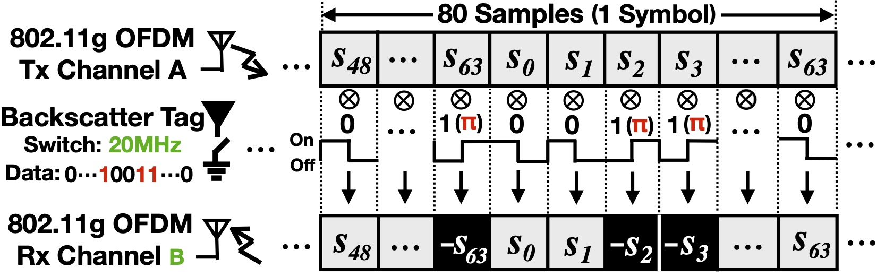
Verification and Redesign of OFDM Backscatter
Xin Liu , Zicheng Chi, Wei Wang, Yao Yao, Pei Hao, Ting Zhu
NSDI'21 [Paper] [Slides] [Presentation]
Xin Liu , Zicheng Chi, Wei Wang, Yao Yao, Pei Hao, Ting Zhu
NSDI'21 [Paper] [Slides] [Presentation]
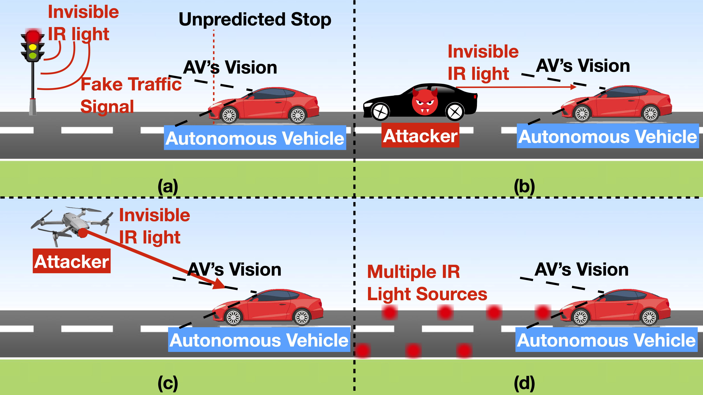
I Can See the Light: Attacks on Autonomous Vehicles Using Invisible Lights
Wei Wang, Yao Yao, Xin Liu, Xiang Li, Hao Pei, Ting Zhu
CCS'21 [Paper] [Slides] [Presentation]
Wei Wang, Yao Yao, Xin Liu, Xiang Li, Hao Pei, Ting Zhu
CCS'21 [Paper] [Slides] [Presentation]
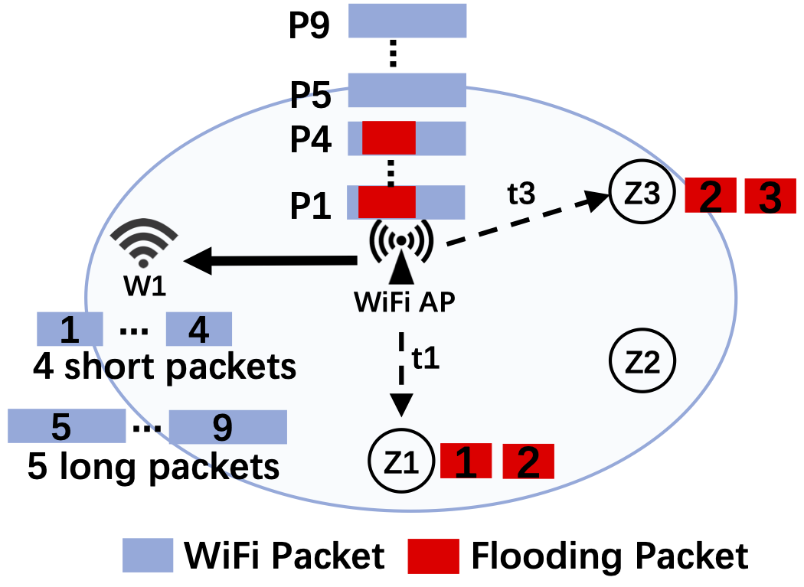
Exploiting WiFi AP for Simultaneous Data Dissemination among WiFi and ZigBee Devices
Wei Wang, Xin Liu, Yao Yao, Ting Zhu
ICNP'21 [Paper] [Slides] [Presentation]
Wei Wang, Xin Liu, Yao Yao, Ting Zhu
ICNP'21 [Paper] [Slides] [Presentation]
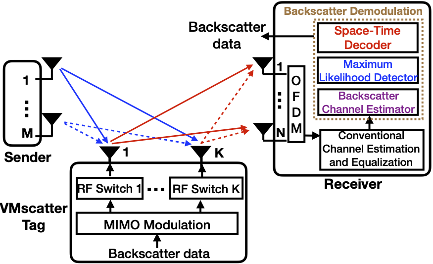
VMscatter: A Versatile MIMO Backscatter
Xin Liu, Zicheng Chi, Wei Wang, Yao Yao, Ting Zhu
NSDI'20 [Paper] [Slides] [Presentation]
Xin Liu, Zicheng Chi, Wei Wang, Yao Yao, Ting Zhu
NSDI'20 [Paper] [Slides] [Presentation]
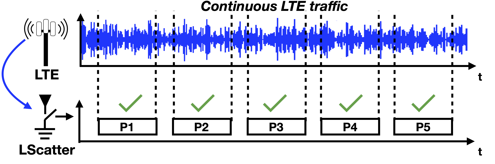
Leveraging Ambient LTE Traffic for Ubiquitous Passive Communication
Zicheng Chi, Xin Liu (co-primary), Wei Wang, Yao Yao, Ting Zhu
SIGCOMM'20 [Paper] [Slides] [Presentation]
Zicheng Chi, Xin Liu (co-primary), Wei Wang, Yao Yao, Ting Zhu
SIGCOMM'20 [Paper] [Slides] [Presentation]
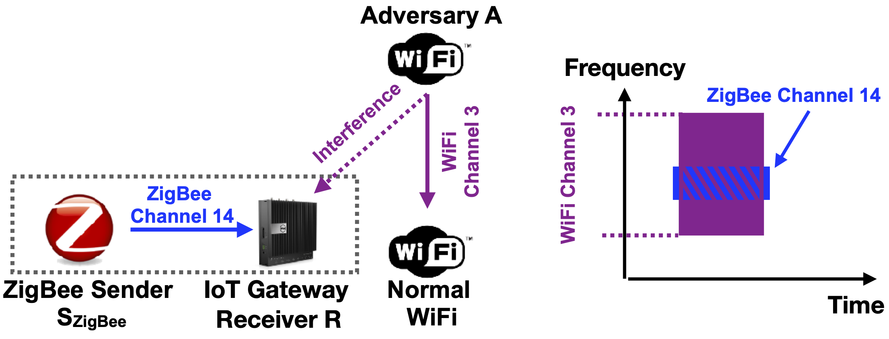
Countering Cross-Technology Jamming Attack
Zicheng Chi, Yan Li, Xin Liu, Wei Wang, Yao Yao, Ting Zhu, Yanchao Zhang
WiSec'20 [Paper] [Slides] [Presentation]
Zicheng Chi, Yan Li, Xin Liu, Wei Wang, Yao Yao, Ting Zhu, Yanchao Zhang
WiSec'20 [Paper] [Slides] [Presentation]
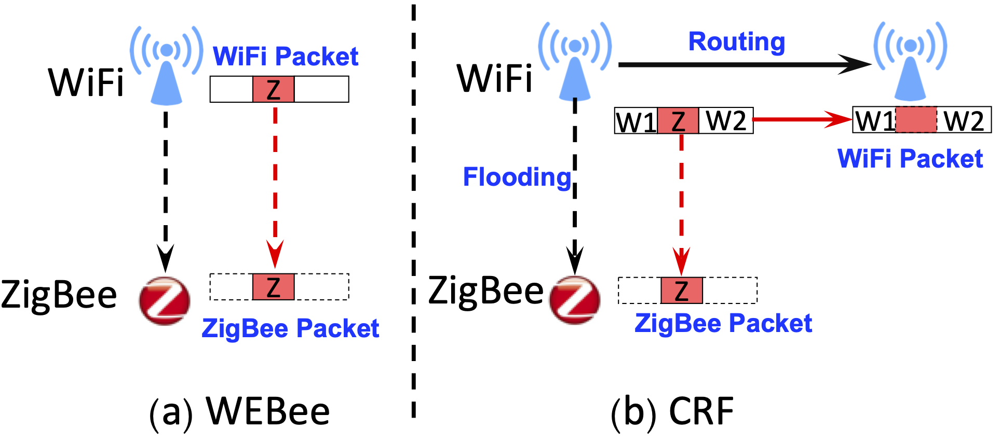
CRF: Coexistent Routing and Flooding using WiFi Packets in Heterogeneous IoT Networks
Wei Wang, Xin Liu, Yao Yao, Yan Pan, Zicheng Chi, Ting Zhu
INFOCOM'19 [Paper]
Wei Wang, Xin Liu, Yao Yao, Yan Pan, Zicheng Chi, Ting Zhu
INFOCOM'19 [Paper]
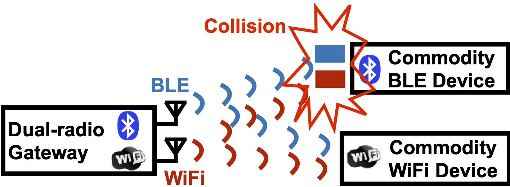
Parallel Inclusive Communication for Connecting Heterogeneous IoT Devices at the Edge
Zicheng Chi, Yan Li, Xin Liu, Yao Yao, Yanchao Zhang, Ting Zhu
SenSys'19 (Best Paper Award Candidate) [Paper] [Presentation]
Zicheng Chi, Yan Li, Xin Liu, Yao Yao, Yanchao Zhang, Ting Zhu
SenSys'19 (Best Paper Award Candidate) [Paper] [Presentation]
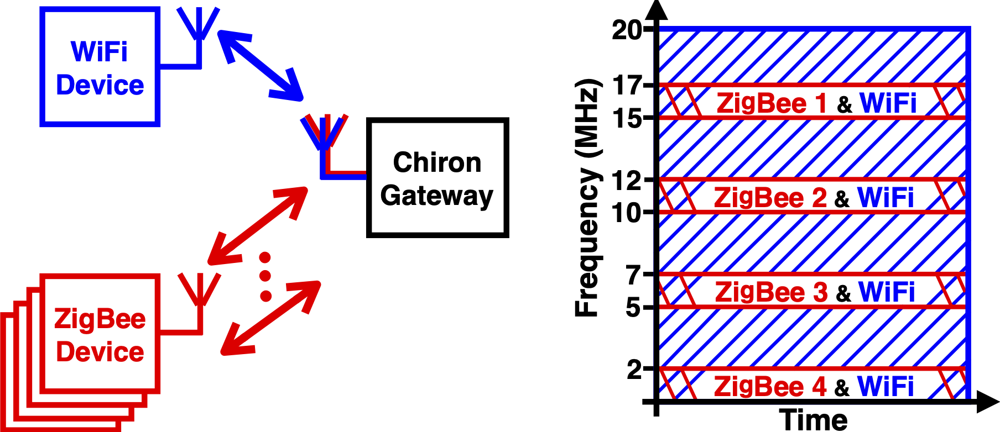
Chiron: Concurrent High Throughput Communication for IoT Devices
Yan Li, Zicheng Chi, Xin Liu, Ting Zhu
MobiSys'18 [Paper] [Presentation]
Yan Li, Zicheng Chi, Xin Liu, Ting Zhu
MobiSys'18 [Paper] [Presentation]
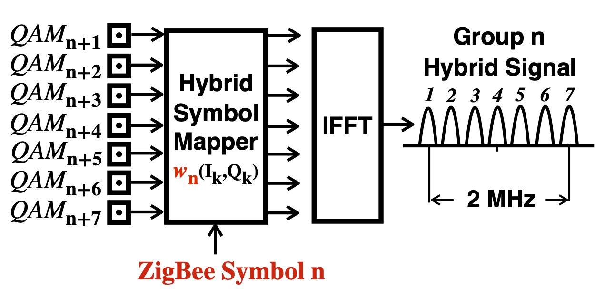
Passive-ZigBee: Enabling ZigBee Communication in IoT Networks with 1000X+ Less Power Consumption
Yan Li, Zicheng Chi, Xin Liu, Ting Zhu
SenSys'18 (Best Paper Runner-up Award) [Paper] [Slides]
Yan Li, Zicheng Chi, Xin Liu, Ting Zhu
SenSys'18 (Best Paper Runner-up Award) [Paper] [Slides]
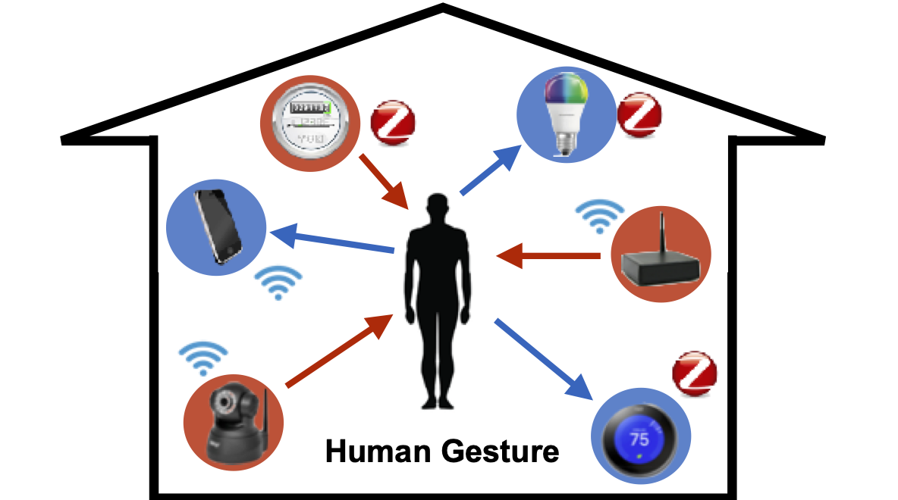
EAR: Exploit Uncontrollable Ambient RF Signals in Heterogeneous Networks for Gesture Recognition
Zicheng Chi, Yao Yao, Tiantian Xie, Xin Liu, Zhichuan Huang, Wei Wang, Ting Zhu
SenSys'18 [Paper] [Slides]
Zicheng Chi, Yao Yao, Tiantian Xie, Xin Liu, Zhichuan Huang, Wei Wang, Ting Zhu
SenSys'18 [Paper] [Slides]

Aegis: An Interference-Negligible RF Sensing Shield
Yao Yao, Yan Li, Xin Liu, Zicheng Chi, Wei Wang, Tiantian Xie, Ting Zhu
INFOCOM'18 [Paper]
Yao Yao, Yan Li, Xin Liu, Zicheng Chi, Wei Wang, Tiantian Xie, Ting Zhu
INFOCOM'18 [Paper]

ECT: Exploiting Cross-Technology Concurrent Transmission for Reducing Packet Delivery Delay in IOT Networks
Wei Wang, Tiantian Xie, Xin Liu, Ting Zhu
INFOCOM'18 [Paper]
Wei Wang, Tiantian Xie, Xin Liu, Ting Zhu
INFOCOM'18 [Paper]

Real-time Algorithm for SIFT Based on Distributed Shared Memory Architecture with Homogeneous Multi-core DSP
Xin Liu, Wenjie Chen, Tao Ma, Lishuang Xu
2011 International Conference on Intelligent Control and Information Processing [Paper]
Xin Liu, Wenjie Chen, Tao Ma, Lishuang Xu
2011 International Conference on Intelligent Control and Information Processing [Paper]
Journals

Coexistent Routing and Flooding using WiFi Packets in Heterogeneous IoT Network
Wei Wang, Xin Liu, Yao Yao, Zicheng Chi, Yan Pan, Ting Zhu
Transactions on Networking [Paper]
Wei Wang, Xin Liu, Yao Yao, Zicheng Chi, Yan Pan, Ting Zhu
Transactions on Networking [Paper]

ECT: Exploiting Cross-Technology Transmission for Reducing Packet Delivery Delay in IoT Networks
Wei Wang, Tiantian Xie, Xin Liu, Yao Yao, Ting Zhu
Transactions on Sensor Networks [Paper]
Wei Wang, Tiantian Xie, Xin Liu, Yao Yao, Ting Zhu
Transactions on Sensor Networks [Paper]
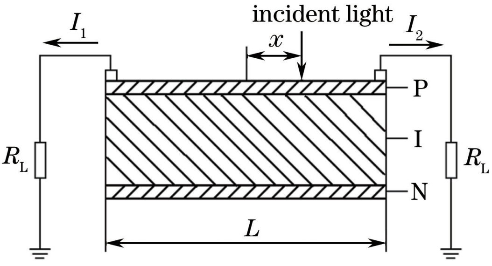
High Precision Laser Position Detecting System Based on Position Sensitive Device
Zhi Cheng, Dengfeng Dong, Weihu Zhou, Xin Liu
Laser & Optoelectronics Progress 2016 [Paper]
Zhi Cheng, Dengfeng Dong, Weihu Zhou, Xin Liu
Laser & Optoelectronics Progress 2016 [Paper]
Posters
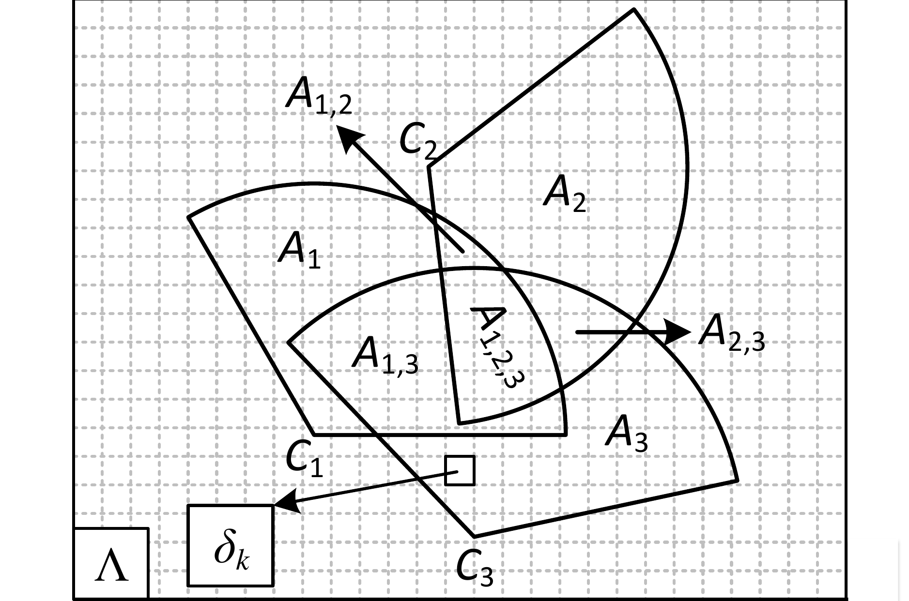
Poster: Smart Object-Oriented Dynamic Energy Management for Base Stations in Smart Cities
Xin Liu, Wei Wang, Ting Zhu, Qingquan Zhang, Ping Yi
SMARTOBJECTS'17 [Poster]
Xin Liu, Wei Wang, Ting Zhu, Qingquan Zhang, Ping Yi
SMARTOBJECTS'17 [Poster]